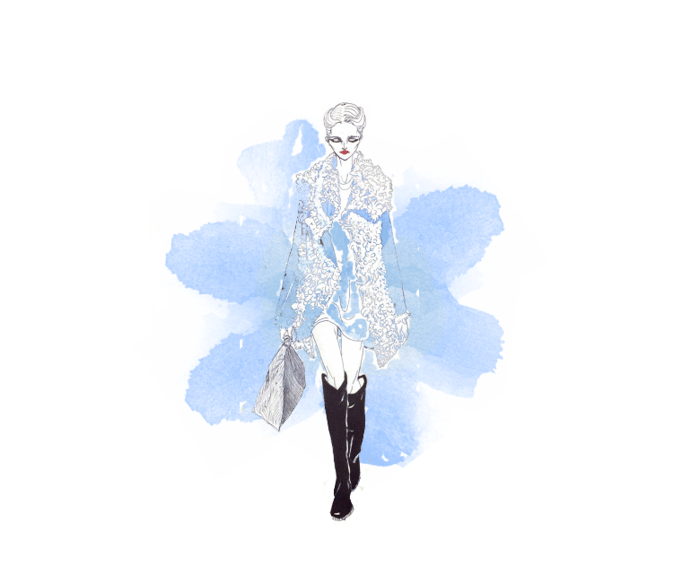
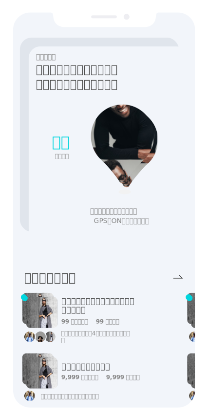
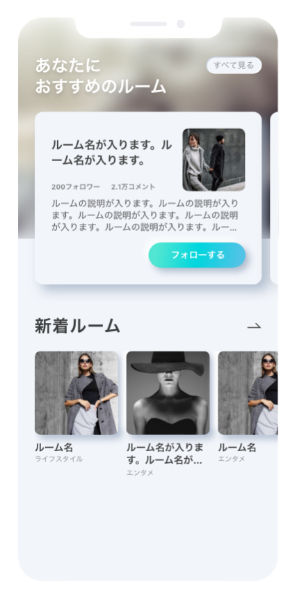
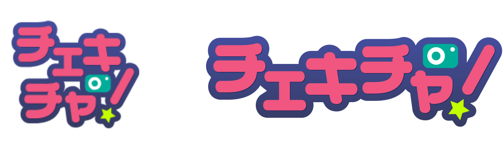

aik's portfolio
Scroll Down
デザイン思考
伝えたいことを


伝えたいことを
補助するデザイン
問題解決するアイディアを創出することがデザインの使命であり、
それを達成するに当たって制作時に心がけていること
Vision
分かりやすくなることで、ユーザーの印象に残るデザインになる
スポット＝「現在地」に特化したルームということが連想しやすいように、画像を”マップアイコン”で切り出すオンラインを示すアイコンは緑or青の共通認識の色を用いる
伝えたいこと以外を気にされないようにする
（認知負荷を下げる）
新着はあまりユーザーが集まっていないので、ネガティブになり得る情報は与えない
制作フロー
世界観からの、
世界観からの、
逆算
制作フローではデザインプロセスが
目的→戦略→戦術になるよう設計
デザインは目的を達成するための戦術の1つ
- 制作フロー例
- ソーシャルアプリケーション


制作実績
プラットフォーム型ファンクラブアプリ

- 主な機能
- 限定メッセージ配信 / デジタル会員証の発行 / 本人ライブ配信 / スクラッチくじ
- 制作期間
- 2019年6月~現在 *アップデート機能追加中
- 制作体制
- HTML/CSS コーダー：3名、 バックエンドエンジニア：3名、 iOS/アンドロイドエンジニア：4名
- 使用ツール
- Adobe Aftereffect / Adobe XD / Dreamweaver / Illustrator / Github / S3
- 担当領域
- サービスロゴ / アプリアイコンの制作
デジタル会員証のデザイン
スクラッチコンテンツの設計 / デザイン / コーディング
Lottieアニメーションの制作 / Webページへの実装
ロゴタイプの作成では、サービス全体の世界観であるスタイリッシュさを追求して２種類の筆記体を採用
特にFとi はこだわって細部まで調整した
- 制作期間
- 2週間(シンボルタイプ) 、1週間(ロゴタイプ)
- 使用ツール
- Illustrator / フィボナッチ数列

タレントとファンが1対1で、遠く離れていても特典会ができるライブ配信アプリ

- 制作期間
- [ Ver.1.0 ] 2018年6~3月
- 制作体制
- HTML/CSS コーダー：2名、 バックエンドエンジニア：1名、 iOS/アンドロイドエンジニア：4名
- 使用ツール
- Adobe XD / Photoshop / Illustrator / Dreamweaver / Github / S3
- 担当領域
- マイページ (設定系ページ含む）のデザイン / コーディング
プレミアム会員系ページ のデザイン / コーディング
アイコンの制作
アプリストアのスクリーンショットの制作
アイコンはサービス内のビジュアルに適応するよう可愛らしさを出し、サービスのコンセプトを曖昧にしないよう注意した
アイコンは文字よりも理解を早めることができる利点はあるが、あくまでもイラストではなく、シグナルである認識を忘れずユーザーを的確にナビゲートできるよう作成